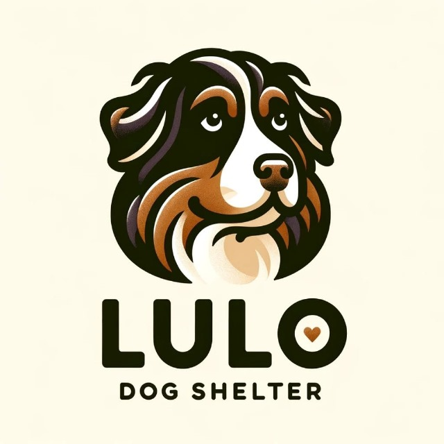

React Website
Lulo was my beloved dog. He taught me what unconditional love is and was always there for me, no matter what. Before he passed away, I knew I wanted to do something more with my life and give back. So, my wife and I decided to create a foundation to help other animals in need.
Fundacion LULO is a non-profit organization that aims to helps animals in need by providing shelter, food, medical care and love to animals. You can find more details about our work in our website at (currently under construction) Fundacion Lulo.
Also please check Lulo's instagram here.
Could I have use templates? WordPress? Or other sites? Sure, but I wanted to learn React and Node.js, so I decided to build this website from scratch.
This website still under construction, but when its dones it will have several features like:
You can find the repo here.